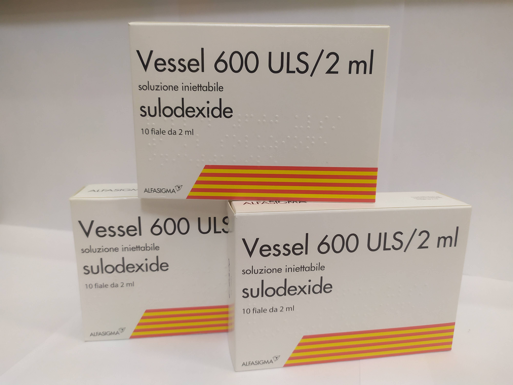

Контактная информация:
Цена: 1050 грн/уп.
В наличии
Производитель: Италия
Цена: 1050 грн/уп.
В наличии
Именно в FarmItal вы можете купить вессел 600 УЛС/2 мл №10 - vessel 600 ULS/2 ml №10 в Украине, Гарантированно Качественный!
Доставка vessel 600 ULS производится транспортными компаниями, сроки выполнения заказа оговариваются менеджером Фармитал. Вы можете заказать Вессел 600 УЛС(Дуэ ф) в городах: Одесса, Херсон, Чернигов, Северодонецк, Бердянск, Бровары, Днепр, Винница, Киев, Славянск, Полтава, Краматорск, Белая Церковь, Каменское, Мариуполь, Черновцы, Александрия, Камь янец-подольский, Львов, Запорожье, Кропивницкий, Житомир, Ивано-Франковск, Сумы, Черкассы, Константиновка, Мелитополь, Кривой Рог, Ровно, Луцк, Никополь, Павлоград, Ужгород, Кременчуг, Лисичанск, Хмельницкий, Тернополь, Харьков, Николаев, а также в других населённых пунктах Украины.
Ампулы с жидкостью для инъекций.
Раствор для инъекций: светло-желтый или желтый прозрачный раствор, помещенный в ампулы из темного прозрачного стекла.
ангиопатии с повышенным риском тромбообразования, в т.ч. после перенесенного инфаркта миокарда; нарушение мозгового кровообращения, включая острый период ишемического инсульта и период раннего восстановления; дисциркуляторная энцефалопатия, обусловленная атеросклерозом, сахарным диабетом, гипертонической болезнью; сосудистая деменция; окклюзионные поражения периферических артерий атеросклеротического и диабетического генеза; флебопатии, тромбозы глубоких вен; микроангиопатии (нефропатия, ретинопатия, нейропатия) и макроангиопатии (синдром диабетической стопы, энцефалопатия, кардиопатия) при сахарном диабете; тромбофилические состояния, антифосфолипидный синдром (совместно с ацетилсалициловой кислотой, а также вслед за низкомолекулярными гепаринами); лечение гепарин-индуцированной тромботической тромбоцитопении (ГТТ), поскольку препарат не вызывает и не усиливает ГТТ.
В/м, в/в (150–200 мл физраствора), внутрь. В начале лечения содержимое 1 ампулы вводить ежедневно внутримышечно в течение 15-20 дней. По усмотрению врача режим дозировки может быть изменен.
Самолечение может быть вредным для вашего здоровья! Перед началом лечения обратитесь к вашему врачу!!
При необходимости рекомендуется использовать препарат под контролем коагулограммы. В начале и конце лечения целесообразно определять следующие показатели: АЧТВ (в норме - 30-40 с, в зависимости от вида и концентрации используемого активатора может быть 25-30 или 35-50 с), содержание антитромбина III (в норме - 210-300 мг /л), время кровотечения (в норме Дукой - 2-4 мин), время свертывания нестабилизированной крови (в норме методом Милиана в модификации Моравица - 6-8 мин). Вессел 600 ULS 2ml увеличивает нормальные показатели.
Симптомы: кровоточивость или кровотечение.
Лечение: отмена препарата, симптоматическая терапия.
При беременности назначается под строгим наблюдением врача. Есть положительный опыт применения с целью лечения и профилактики сосудистых осложнений у больных диабетом типа 1 во II и III триместрах беременности, при развитии позднего токсикоза беременных – гестоза.
Не рекомендуется одновременное применение с препаратами, влияющими на систему гемостаза (прямые и косвенные антикоагулянты, антиагреганты).
Хранить в недоступном для детей месте при температуре не больше 30 °C.